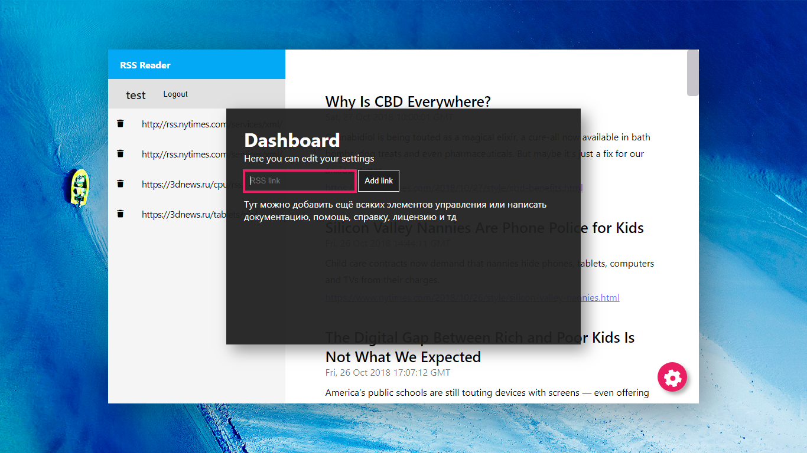

RSS Reader
Команда: Телевизор между главным и 9 корпусом Фотка телевизора
Описание проекта на хакатон Tula Hack Junior 2018
Демо сервер с сайтом http://151.80.47.142/
Оглавление:
- Краткое описание
- Что технически представляет из себя продукт
- Исходный код
- Команда
- О типографике на этой странице
Краткое описание:
На данной странице рассказывается про проект для Tula Hack Junior 2018, представленный командой "Телевизор между главным и 9 корпусом".
Важно
Это наш первый проект подобного размера, поэтому сразу извинимся за код, особенно за работу с БД,
обычно мы пишем лучше и делаем меньше запросов)).
С Laravel и React мы начали работать буквально за неделю до хакатона и изначально
планировали делать какое-либо задание только на PHP, JS, MySQL.
(Спойлер: реакт в итоге испльзовался только для анимации)
Почему RSS Reader?
Ответ простой - на хакатоне мы планировали делать web проект, а DDPlanet самыми первыми выложили задания. Среди них был как раз этот RSS Reader. Взяли его.
Что представляет из себя проект?
За хакатон мы смогли написать Mvp - minimum viable product (с большой M!) приложения для чтения RSS лент. Для использования нужно зарегистрироваться (ввести имя и email). В приложении можно добавлять RSS ленты, читать анонсы новостей из них и переходить на страницу с полной новостью (уже на сайте новости).
Форма добавления (выезжает при клике на красную кнопку настроек):
Собственно, из возможностей и практического приминения продукта в жизни это всё.
Что технически представляет из себя продукт
История о том, как код "сейчас напишу пока так, потом исправлю" стал финальной версией
Очень коротко, то продукт - это серверное приложение на Laravel (предоставляет api для авторизированных клиентов для работы с базой данных), базу данных MySQL, Landing Page, который показывается для неавторизированных пользователей и клинтское приложение на JavaScript.
Архитектура
Для наглядности мы нарисовали полную картину с общей архитектурой проекта
Backend
На сервере у нас используется PHP фреймворк Laravel, из всего его обилия возможностей мы задействовали только роутинг - роуты для входа, регистрации, api. Все роуты и логика приложения прописаны в файле routes/web.php. Регистрацию и авторизацию пользователей мы вырезали из стандартных форм, сгенерированных Laravel-ем. Для работы с базой данных были использованы статические методы класса DB.
Пример:
DB::select("SELECT * FROM users WHERE id = ?", [1]);
Результатом выполнения будет php массив пользователей с id равным 1. (От SQL инъекций защищено).
Frontend
Тут просто куча макаронного кода в файле js/main.js, есть красивая анимация форм для входа и регистрации (на реакте), сюда ещё что-нибудь дописать потом (!)
Дизайн
Целью дизайна было быть похожим на приложение Telegram, открытое не на полный экран на рабочем столе с красивыми обоями
Вся (Лендинг, приложение, формы) вёрска сделана вручную, использовался css препроцессор scss
Исходный код
И инструкция по установке находятся вот тут
Команда
- Кирилл рассказывал презентацию, искал мемы
- Андрей программист, интерфейсы
- Дима программист, организовал сервер для демонстрации